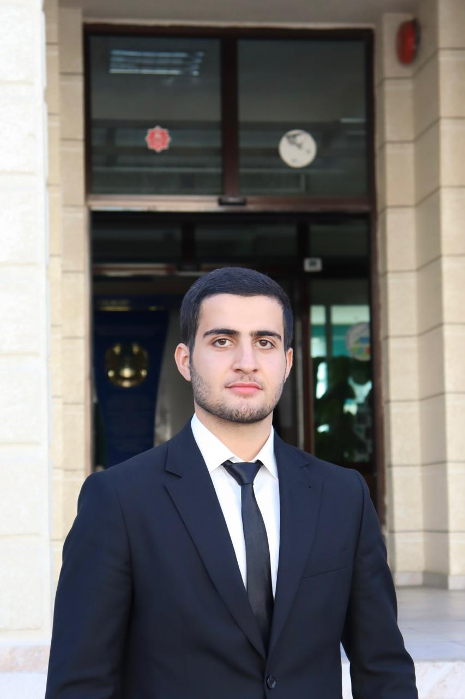

👥

Amir Dilovarov
Ayla Badalova

Süleyman Tongut
AEROO Space AI Competition 2026
Power Health & Vision Anomaly Detection
| STM32N6570-DK (NPU Board) | $193 |
| STM32 B-L475E-IOT01A (IoT Board) | $54 |
| IMX335 5MP Camera Module | $65 |
| $312 |